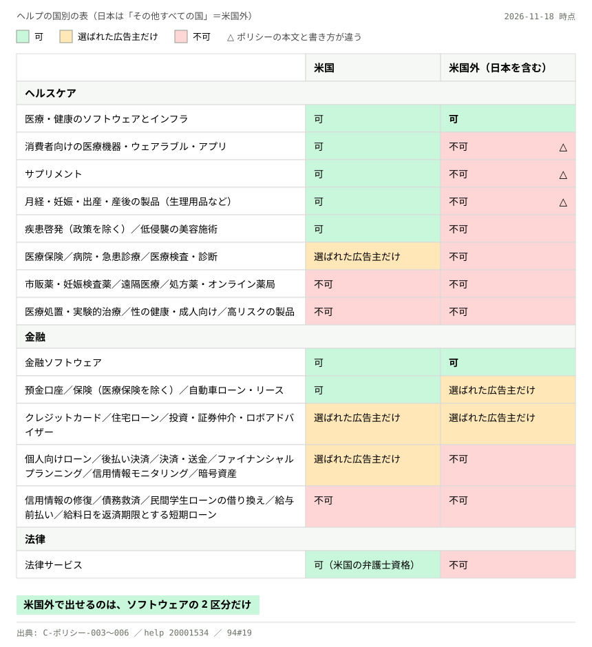

[ ChatGPT / 34 ]
34審査落ち（不承認・配信停止）の原因と直し方
位置づけ: ChatGPT の広告（OpenAI の ChatGPT Ads）の審査だけを扱う。どの業種が出せるかの全体と日本の法律との対応は 31_日本の広告法規とポリシー.md（以下 C31）。日本の法令の中身は Google 側の ../Google広告の基礎/31_日本の広告法規とポリシー.md（以下 G31）。法律の助言ではない
このメモについて
- 確認日: 2026-11-18（OpenAI の広告ポリシーの日本語版〔https://openai.com/ja-JP/policies/ad-policies/、表示は「Updated: 2026年9月10日」、変更ログの最新は v1.6。〕、help.openai.com の 7 ページ〔20001534 の日本語版と英語版、20001217、20001220、20001243、20001…
- 位置づけ: ChatGPT の広告（OpenAI の ChatGPT Ads）の審査だけを扱う。どの業種が出せるかの全体と日本の法律との対応は
31_日本の広告法規とポリシー.md（以下 C31）。日本の法令の中身は Google 側の../Google広告の基礎/31_日本の広告法規とポリシー.md（以下 G31）。法律の助言ではない - 関連メモ:
00_全体像.md§7（以下 00§7）、61_いま言えること言えないこと.md、62_管理画面で確かめたこと.md（以下 62）、92_ルール表_統合.mdの C-審査・C-ポリシー・C-アカウント、94_裏取りの記録.md（以下 94）、Google の手本../Google広告の基礎/34_審査落ちの原因と直し方.md（以下 G34）、Meta の… - 使い方: 不承認・配信なしが出たら、1 章で「どの層の・どの確認か」を確かめ、2 章の表で理由を引き、5 章の手順で直す。まとめて落ちたとき・突然止まったときは 8 章、アカウントが止まったときは 6 章。この媒体はベータで、ポリシーは 2026 年 3 月の初版から半年で 6 回改定された（9 章）。確認日から 2 週間を過ぎたら、ポリシーの変更ログと 20001534 の表を取り直し…
- 凡例: ✓ 公式で確認 ／ △ 公式の中で食い違う・言い方が揺れる ／ ? 公式に記載なし・確認できず
地図
本文
0.先に結論（10 行）
- 01
審査は 3 つのレベルで見る: 広告主（正当な事業者か・資格要件・詐欺のリスク）、広告クリエイティブとランディングページ（タイトル・本文・画像・LP）、掲載（承認された広告を、掲載ポリシーに合う会話にだけ出す）✓公式本文（P§4「審査範囲」）
- 02
ヘルプは別の切り方で 4 つの確認を挙げる: アカウントの認証、アカウントの承認、広告の審査、広告の配信。「いずれかが完了しても、ほかのすべてが完了したことにはならない」✓公式本文（H:20001534）
- 03
審査のほとんどは自動（LLM や分類器を使った機械学習が、配信前に広告・LP・広告主の信号を見る）。重大度・確信度・リスクに応じて人の審査に回す。金融などの制限カテゴリは、身元確認の強化や手動の審査が加わりうる ✓公式本文（P§4「審査とモニタリング」）
- 04
審査も評価もできない広告・LP は配信されない ✓公式本文（P§4）。LP は OpenAI のクローラー OAI-AdsBot が読めることが必須（OAI-SearchBot は推奨）。403・404・429・空白・ログイン・確認画面を返すと通らない。直しても承認は保証されず、サポートの手動の回避に頼れない ✓公式本文（H:20001243）
- 05
事業者の認証が済む前でも配信は始まりうる（広告が承認され、請求・予算などが整っていれば費用も発生する）。費用が一定の基準額に達すると追加の認証を求められ、承認まで配信が制限されうる。認証は最大 7 営業日 ✓公式本文（H:20001534、62#13 の画面の表示とも一致）
- 06
日本向けで最も多い「落ち方」は表現ではなく業種: ポリシーは米国外の金融サービス・ヘルスケアサービスを「原則として禁止」、米国外の法律サービスを「禁止」と書く ✓公式本文（P§2）。ヘルプの国別の表では、日本（「その他すべての国」）で出せるのは健康・金融のソフトウェアだけで、預金・カード・保険・ローン・投資は「承認済みの特定の広告主に限定」（申請を受け付けていない区分がある）✓公式本文（H:20001534）
- 07
承認された広告でも、禁止の内容を含むサイトにリンクすると不可（例: 食品配達の広告が酒の配達のサイトへ）。広告は「最初から最後まで一貫性を保つ」✓公式本文（P§2）。また、審査に通っても、区分と国の組み合わせで選んだ国に出せないことがある ✓公式本文（H:20001534）
- 08
直し方: 管理画面の広告の状態が「Not serving」ならカーソルを当てて理由を見る → 直せるなら編集して出し直す（編集すると新しい版として再審査）→ 判定が誤りなら異議申し立てか「審査をリクエスト」。異議が最短の道で、サポート（ads-support@openai.com）は「異議の手段が無い」か「7 日を過ぎても決まらない」ときだけ ✓公式本文（H:20001217、H:20001534、D）
- 09
アカウントへの措置は、却下・削除、配信の制限、編集や是正の要求、広告製品へのアクセスの制限、重大・反復・欺瞞的な違反では停止・解約 ✓公式本文（P§4「執行と報告」）。Google のような回数と停止日数の表（ストライク）は公開されていない ?
- 10
公式に書かれていないこと: 広告の審査にかかる時間、異議の回数の上限、日本語の広告の審査基準、日本の法律（薬機法・景表法など）の扱い ?。いずれも「仮」で計画し、余裕を持って入稿する
0-1.Google（G34）・Meta（M34）との対比
Google・Meta の列は G34 §0 と M34 §0-1 の記述に合わせた（記憶で書いていない）。
| 観点 | Google 広告（G34） | Meta 広告（M34） | ChatGPT の広告 | 運用の判断への効き方 |
|---|---|---|---|---|
| 審査の層 | 広告・アセット・リンク先・アカウント（適格性確認） | 広告・ターゲット・資産（ページ・ビジネスポートフォリオ）・広告主の認証 | 広告主／クリエイティブと LP／掲載の 3 レベル（P§4）。運用の上では、事業者の認証・ブランド審査・アカウントの審査・広告の審査が別々に進む ✓（H:20001534、D） | 「広告が承認された」だけでは配信されない。4 つの確認を別々に見る |
| 「掲載」の審査 | — （キーワードと配信面の除外で広告主が決める） | — | 承認された広告を、会話の文脈が掲載ポリシーに合うときだけ出すのが審査の 3 層目 ✓（P§1・§4） | 「承認済みなのに出ない」の原因に、会話の文脈（健康・政治などの話題）がある。広告主からは見えない〔推測〕 |
| 審査の時間 | ほとんど 1 営業日、DG は 3〜5 営業日、複雑な形式は最長 7 営業日 | ほとんど 24 時間以内 | 広告の審査の時間は記載なし ?。事業者の認証は最大 7 営業日。新しいキャンペーンは配信ゼロの報告の前に 24 時間待つ ✓（H:20001534、H:20001217） | 公開は数日前に。認証は出稿の 2 週間前に始める〔推測〕 |
| 再審査の引き金 | 広告・アセットの編集 | ターゲット・クリエイティブ・最適化・課金対象イベントの変更 | クリエイティブの編集＝新しい版として再審査。ブランド名の変更＝ブランド審査（承認まで配信停止）、法人名の変更＝事業者の審査のやり直し（止まることがある）✓（D、H:20001213） | 名前の変更は配信停止の引き金。キャンペーン中に名前を変えない |
| LP の読み取り | Google のクローラー。クローキングは即停止 | リンク先も審査の対象 | OAI-AdsBot が読めないと審査も配信もできない。WAF・CDN・国の制限・ログインで弾くと不可 ✓（H:20001243、P§4） | 日本のサイトに多い「海外からのアクセスを弾く設定」が、そのまま審査落ちになりうる〔推測〕 |
| 直したあと | 保存で自動再審査。異議は「Dispute decision」、1 広告 3 回まで | 編集して公開で自動再審査。再審査のリクエストは実質 1 回 | 編集して出し直すか、異議・「審査をリクエスト」。回数の上限は ?。7 日を過ぎたらサポートへ ✓（H:20001534、H:20001217） | 回数の上限が分からないので、証拠をそろえてから異議を出す〔推測〕 |
| 違反の積み重ね | 違反警告: 警告 → 3 日停止 → 7 日停止 → 強制停止 | 広告の回数表は非公開。重大・繰り返しで広告利用の制限 | 回数表は非公開 ?。重大・反復・欺瞞的な違反で停止・解約 ✓（P§4） | 何回で止まるか読めない。1 回目の不承認から全体を点検する〔推測〕 |
| 業種の国の扱い | 国ごとの認定（例: 金融の適格性確認の国の一覧に日本は無い） | 国の一覧（処方薬は米・加・NZ 向けだけ等） | 「米国」と「その他すべての国」の 2 区分。日本は後者で、金融・ヘルスケア・法律はほぼ出せない ✓（H:20001534） | 日本の健康・金融・士業は、認定を取れば出せる Google とは違う。取る手続きそのものが無い区分がある |
| 独自の基準 | 編集基準（表記・記号） | 個人の特性（「〜でお悩みのあなたへ」） | インターフェースの模倣（ChatGPT や OpenAI の画面に見える広告）✓（P§2） | チャットの吹き出し風の画像、「ChatGPT のおすすめ」風の文を使わない〔推測〕 |
| 自動の書き換え | AI Max のテキストのカスタマイズ（オプトイン系） | Advantage+ クリエイティブ | クリエイティブの強化が既定でオン（2026-10-30 から。営業管理のアカウントは対象外。書き換え後の文面を 1 本ずつ事前に確かめる手段は無い）✓（S-43、94#9） | 表現の管理が厳しい案件は、入稿前に「設定 > 一般」でオフにする（62#10） |
| 審査の窓口 | ポリシー マネージャー、API の evidences（文言まで） | ビジネスサポートホーム、API の ad_review_feedback | Ads Manager の広告の状態（カーソルで理由）、却下の通知メール、API の review_status・review ✓（H:20001217、D）。どの文言が原因かまで返るかは ? | 1 要素ずつ直して切り分ける |
1.審査の仕組み
- どれか 1 つでも
- ブランド審査が承認されるまでアカウントは広告を出せない
- 返らないことを承認とも却下とも読まない
- 運用の判断への効き方
- 準備ができていなければキャンペーンを一時停止する
- 新しい版として提出され、もう一度審査される
1-1.審査の 3 レベルと、4 つの確認 ✓公式本文

審査は広告主（事業者の確認は最大 7 営業日）、クリエイティブと LP（どれか 1 つでも反すれば却下、OAI-AdsBot が LP を読めなければ配信されない）、掲載（承認された広告も敏感な会話には出ない）の 3 層で、1 つ通っても他が済んだことにはならない。配信されないときは広告の状態だけでなく、事業者の確認、LP のクローラーへの応答、会話の種類の順に見る。
| レベル（P§4） | 何を見るか | 落ちたときの出方 | 出典 |
|---|---|---|---|
| ① 広告主 | Ads Manager への登録時に、正当な事業者か、広告主の資格要件を満たすか、安全に参加できるか。広告主の認証、アカウント品質の評価、詐欺・不正行為・悪用・欺瞞のリスク信号の分析を含みうる | 事業者の認証の失敗、ドメインの不承認、業種が対象外（判定はメールで届き、異議のリンクがある） | P§4、H:20001534 |
| ② 広告クリエイティブと LP | アップロードされた広告のタイトル・コピー・メディア・LP がポリシーに合うか。どれか 1 つでも許可されない区分を宣伝・実質的に言及していれば、または基本基準に反すれば却下 | 広告の不承認（Ads Manager の状態） | P§4、H:20001217 |
| ③ 掲載 | 承認された広告を、掲載ポリシーに合う会話にだけ出す | 不承認にはならない。合う会話が無ければ出ない〔推測〕 | P§1・§4 |
ヘルプの 4 つの確認（H:20001534）と、開発者文書の審査の欄（D）の対応:
| ヘルプの確認 | 開発者文書・画面での見え方 | 中身 |
|---|---|---|
| アカウントの認証（事業者の認証） | 画面のバナー「事業者認証を完了してください」（62#13） | 法人の身元・所有者・提携関係の正確さ |
| アカウントの承認 | review.status（ブランド審査）と account_integrity_review.review.status（アカウントの審査）✓ D | ブランド名・アイコン・URL と、アカウント全体の審査。ブランド審査が承認されるまでアカウントは広告を出せない。理由の例に missing_favicon（ブランドのアイコンが無い。アイコンは 128×128 ピクセル以上。△ 同じ開発者文書のアカウントの節は 256×256 以上。256 で作れば両方を満たす、05§5-2）✓ D |
| 広告の審査 | 広告の review_status: in_review／approved／rejected ✓ D | 広告ごとの審査。却下は「広告ポリシーのどれかに反している。編集すれば再審査される」✓ D |
| 広告の配信 | serving_issues（配信の妨げ）、画面の「Serving」「Not serving」✓ D、H:20001217 | 承認済みでも、上位の停止・予算・期間・請求・国の制限で出ない |
account_integrity_reviewの欄は、状態が無いときは返らない。返らないことを承認とも却下とも読まない（D）✓- アカウントを
activeにしても、全部のキャンペーンが動く・全部の広告が承認済み・予算に余裕がある、という意味ではない（D）✓ - 運用の判断への効き方: 配信されないときは「広告の状態」だけでなく、アカウントのバナー（認証）、ブランド審査、請求の順に見る。4 つのどれが止めているかで直し方がまったく違う
1-2.いつ審査されるか ✓公式本文
| きっかけ | 何が起きるか | 出典 |
|---|---|---|
| 広告の作成 | 作成すると、クリエイティブが審査に回る。作成＝審査を通った・配信できる、ではない | D |
| サインアップ時に Web サイトの URL から最初の広告を作った場合 | 「審査に合格すると広告が配信されます」。承認後、請求・アカウント・キャンペーンの条件がそろえば配信が始まり費用が発生する。準備ができていなければキャンペーンを一時停止する | H:20001213 |
| クリエイティブの編集 | 新しい版として提出され、もう一度審査される | D |
| ブランド名の変更 | ブランド審査。承認まで配信が止まる | H:20001213、H:20001217 |
| 法人名の変更 | 事業者の審査をやり直す。△ ヘルプは「配信が止まることがある（may pause）」、開発者文書（2026-11-24 取得）は「法人名か公開のブランド名を変えると、審査を通るまで止まる」（27§3-2）。止まる前提で計画する | H:20001213、94#17、S-01 |
| アカウント名の変更 | 審査は起きない | H:20001213 |
| ブランドのアイコン・URL の更新 | ブランド審査が始まりうる | D |
| 承認の後 | 審査は続く。利用者のフィードバック、自動の指標、継続的な品質評価を組み合わせて監視し、兆候があれば配信の制限・追加の審査・削除・広告主単位の措置 | P§4 |
| 費用が一定額に達したとき | 追加の事業者の認証を求められることがある（基準額は一律ではなく、変わりうる） | H:20001534 |
| LP の中身だけを変えたとき | ? 自動で再審査されるとは書かれていない。クローラーのページは「LP・トラッキングリンク・リダイレクト・ホスティング・セキュリティ設定を変えたら確認をやり直す」と書く | H:20001243 |
- 運用の判断への効き方: 入札・予算・期間の変更で再審査になるかは書かれていない ?（Meta は「再審査にならない」と明記。M34§1-1）。名前の変更は配信停止に直結するので、セールや繁忙期の最中に行わない
1-3.誰が審査するか ✓公式本文（P§4）
- ほとんどは自動。LLM や分類器を含む機械学習で、広告が配信可能になる前に、広告・LP・広告主の信号を見る。人が監督・調整する
- 一部の決定は、重大度・確信度・潜在的リスクに応じて人の審査に回る
- 制限カテゴリ（例: 金融サービス）は、身元確認の強化や手動の審査が加わりうる。金融・ヘルスケア・法律は「承認はケースバイケースで手動審査」（P§2）
- 利用者は製品内で広告を報告できる。広告主・パートナーはサポート窓口・アカウント窓口から懸念を申し立てられる（P§4）
- OpenAI は「完璧な審査システムは存在しない」とし、違反の広告が出たら調査し、重大なら調査中に広告を一時停止することがあると書く（P§4「インシデント対応」）
- 運用の判断への効き方: 自動の審査は LP も読む。広告文だけ直しても、LP の文言・画像が禁止の区分に当たっていれば通らない〔推測: P§4 の「どれか 1 つでも」から〕
1-4.所要時間
| 対象 | 時間 | 印・出典 |
|---|---|---|
| 広告の審査 | ? 公式に記載なし | C-審査-007 |
| 事業者の認証 | 最大 7 営業日。過ぎたら広告サポートへ。「保留中」は確認の開始待ちも含み、審査が進んでいるとは限らない | ✓ 本文 H:20001534 |
| 異議申し立て | 決まる日数は ?。7 日を過ぎても決まらなければサポートへ | ✓ 本文 H:20001534 |
| 新しいキャンペーンの配信ゼロ | 明らかな妨げが無ければ、公開から 24 時間は待ってから報告する。審査や請求の明らかな妨げがあれば待たずに連絡 | ✓ 本文 H:20001217 |
| 数字の反映 | 表示・クリック・CTR は約 15 分ごと、費用は約 7〜8 時間遅れうる | ✓ 本文 H:20001217 |
| プレビュー | 広告のプレビューは作成から 24 時間で期限切れ。見た目だけで、配信できることの確認にはならない | ✓ 本文 D |
- 運用の判断への効き方: 審査の時間が分からない以上、「当日に入稿して当日に出す」計画は立てない。日付の決まった告知（セール・イベント）は、少なくとも数日前に入稿して承認を確かめる〔推測〕
1-5.ステータスの見え方 ✓公式本文
| どこで | 表示 | 意味 | 出典 |
|---|---|---|---|
| Ads Manager の「Ads」タブの Status | Serving | 配信中 | H:20001217、H:20001220 |
| 同上 | Not serving | 配信されていない。カーソルを当てると理由が出る。よくある原因は、広告文・LP がポリシーに合わない、LP が OpenAI のユーザーエージェントや IP を弾いている | H:20001217 |
| API の広告 | review_status: in_review／approved／rejected、review（詳細） | status: active で in_review なら「有効だが審査が終わっていない」。承認済みでも上位の停止などで出ないことがある | D |
| API のアカウント | review.status・review.reason（ブランド審査）、account_integrity_review | 上の 1-1 | D |
| API の商品フィード | 商品ごとの review_status: approved／pending／rejected | include_rejection_reasons=true で理由（例 "Policy: Alcohol"）。理由が null のこともある | D |
| 管理画面のバナー | 「事業者認証を完了してください」 | 事業者の認証が未完了 | 62#13 |
- 日本語の画面で「Serving」「Not serving」が何と訳されているかは未確認 ?（62 では見ていない）
- 運用の判断への効き方: API で状態を取る道具を作るなら、広告の
review_statusに加えて、アカウントの 2 つの審査とserving_issuesを必ず取る。広告がapprovedでも配信されない理由の大半はそちらにある〔推測〕
1-6.審査できない LP は配信されない（OAI-AdsBot）✓公式本文（H:20001243、P§4）
- OpenAI は、広告として出された Web ページの安全を確かめるためにクローラーを使う。LP の内容は、広告をいつ出すかの判断にも使うことがある
- OAI-AdsBot は必須、OAI-SearchBot は推奨。商品フィードは、商品画像の URL に OAI-SearchBot が届くこと（画像のホストで 403 だとフィードの処理が止まりうる）
- クローラーが受け取る応答ごとの直し方:
| 応答 | 確かめること |
|---|---|
| 403／アクセス拒否 | 拒否したホストのセキュリティ規則。元のドメインではなく、リダイレクト先のサブドメインのことがある |
| 404 | ページかリダイレクト先。トラッキングリンクは端末・地域ごとの行き先 |
| 429 | レート制限・bot 対策。大量の入稿は小さく分けて時間をずらす |
| 空白・不完全・ログイン・確認画面 | 内容と必要な素材がクローラーに届くか。HTTP の成功だけでは内容が読めたことにならない |
- robots.txt だけでは足りない。WAF・CDN・bot 対策・JavaScript の確認画面・CAPTCHA・認証・地域の規則（geo rules）が自動のアクセスを止めていないかを見る
- Cloudflare は OAI-AdsBot を確認済みの bot として許可している。IP の範囲が必要なら openai.com/adsbot.json と openai.com/searchbot.json（2026-11-24 の中身: adsbot.json は IPv4 の /25 が 2 つ〔作成時刻 2026-05-12〕、searchbot.json は 39 範囲。S-81、68§5-4）。ログで見た IP を書き写して許可リストにしない。公式は名乗り・確認済み bot の仕組み・許可リスト・robots.txt・提供元の bot 確認を組み合わせるよう書く（68§5-4）
- Cloudflare の「AI Crawler and Agent access policies」で OpenAI を Allow にしても、WAF の独自の規則・地域の規則・確認画面が別に止めることがある（68§5-3）
- アプリストアのリンク、ディープリンク、文書、アプリやログインが要る行き先、地域限定のアクセスは、審査に十分な内容を渡せないことがある。直接届く Web のページを使う
- サポートに手動で回避してもらうことに頼らない。直したら、状態が自動で変わらなければ出し直すか審査を求める。直しても承認は保証されない
- 審査のクローラーの訪問は課金されるクリックではない（解析ツールでは有料の流入に見えることがある）✓（94#23、H:20001207）
- 運用の判断への効き方: 入稿の前に、広告に入れる完全な URL（トラッキングのパラメータ込み）でリダイレクトをたどり、最後のページを確かめる。トップページが開くことは、広告のリンクが動く証拠にならない。LP の出し分け（A/B テスト・LPO の道具）を使っているなら、クローラーにどの版が見えるかも確かめる〔推測〕
1-7.事業者の認証（未完了でも配信は始まるが、後で止まりうる）✓公式本文（H:20001534、62#13）

事業者の確認（最大 7 営業日）が済む前でも配信は始まり費用が発生しうるが、支出が一定額（一律ではなく、予算や支払いの閾値とは別）に達すると追加の確認を求められ、未完了なら配信が制限・停止されうる。学習の途中で配信が切れないよう確認は出稿の前に済ませ、準備ができていなければキャンペーンを一時停止しておく。
出典: C-アカウント-006・C-アカウント-007・C-審査-014 ほか 4 件 · 2026-11-18 時点
| 状態 | 意味 | 次の手 |
|---|---|---|
| 失敗 | 事業者の身元・所有者・提携関係の正確さを確かめられなかった | アカウント・広告・LP が、事業と他の個人・組織・ブランドとの関係を正確に示しているか直す |
| 進行中 | 最終結果が出ていない。開始待ちも含む | 最大 7 営業日。過ぎたらサポート |
| 未開始 | 認証の画面が開かない | 正しいアカウントで再読み込み・再サインイン。だめならサポート（アカウント ID、押したボタン、エラーの文面か画面、日時と時間帯） |
| 認証のせいで広告を保存できない | 認証が要るセルフサーブのアカウントで、別のドメインを広告のリンク先に使うと、先に認証の承認が要ることがある | 管理者に認証を依頼。「再試行」は試行の回数を消費しうる。「保存」を押すだけでは再試行にならない |
- 画面の表示（62#13）: 「この確認が未完了でも、広告配信を開始できます。後で配信が停止されないよう、今すぐ認証手続きを完了してください」〔画面〕
- 認証の基準額は、キャンペーンの予算とも、支払い方法に請求する時期を決める「支払いの閾値」とも別。無料の広告クレジットではない（H:20001534）
- 認証が未完了だからといって、キャンペーンが止まったままになるとは限らない。出す準備ができていなければ、キャンペーンを一時停止して状態を確かめる（H:20001534）
- サポートへのメッセージに、本人確認の書類・パスワード・支払い情報を入れない（H:20001534）
- 認証で求める書類（日本の登記簿・法人番号など）の具体は ?。開発者文書と 00§7-1 は「法人名・登録住所・必要なら登録番号」（S-01）
- 運用の判断への効き方: 認証は出稿の前に済ませる。未完了で配信を始めると、費用が増えた時点で止まり、学習の途中で配信が切れる〔推測〕。代理店は、広告主の法人名（登記上の名前）とブランド名・LP の運営者の表記を先にそろえておく
1-8.原因を特定する手順 ✓公式本文（H:20001217、H:20001534）
- 1
Ads Manager の「Ads」タブで状態を見る。「Not serving」ならカーソルを当てて理由を読む
- 2
不承認のメッセージで、対象がテキスト・画像・LPのどれかを特定する
- 3
広告全体とリンク先がポリシーに合い、同じ商品・サービスを説明しているかを確かめる（H:20001534「最初の確認事項」）
- 4
LP なら 1-6 の表で、クローラーに何が返っているかを確かめる
- 5
「選択した国で広告を配信できない」なら、区分と国の表（2-3）を見る。審査とは別の制限
- 6
アカウント全体が止まっているなら、事業者の認証、ブランド審査、請求、費用の上限、名前の変更を見る（6-2）
- 7
API を使っているなら、広告・広告グループ・キャンペーンを
include[]=serving_issues付きで取る（D）
2.却下の理由の一覧表（最重要）
- 広告ポリシーの日本語版の章立て
- 当たりうる法令の地図だけ
- 機能・価格・成果・提携関係・他社製品や他社との比較
- 虚偽の推薦
- 商品名・イベント名・ブランド名
- インターフェースの模倣
- 並びは広告ポリシーの日本語版の章立て（P§2 の「広告掲載の基本基準」→「許可されていない広告」の各区分、P§3 の広告主向けポリシー）に沿う。区分の名前は日本語版の見出し
- 「日本でありがちな例」は、公式の例を日本の広告でよくある形に置き換えた書き手の読み〔推測〕。公式が挙げた例は「公式例」と書く
- 「日本の法規」の列は当たりうる法令の地図だけ。対応は C31 §3、中身は G31
- 管理画面の却下の理由の表記が、ポリシーの見出しと同じかは ?（商品フィードの API の例は
"Policy: Alcohol"、ホテルの例は"Gambling"。D）
2-1.掲載の基本基準（カテゴリに関係なく、すべての広告）✓公式本文（P§2）
「これらの基準に違反する広告は、商品カテゴリー自体が許可されている場合でも禁止されます」
| 番号 | 区分 | 中身 | 日本でありがちな例〔推測〕 | 直し方 | 日本の法規（地図） |
|---|---|---|---|---|---|
| C01 | 誤解を招く、または欺瞞的な広告 | 真実で、誤解を招かないこと。機能・価格・成果・提携関係・他社製品や他社との比較に関する根拠のない主張、効果の誇張、虚偽の推薦 | 根拠の示せない「No.1」「満足度 98%」、「〇〇公認」「〇〇推薦」、競合との比較表、「通常価格」の根拠の無い割引表示 | 主張の根拠を LP に示す。根拠の無い比較・最上級を外す。提携関係を正確に | 景表法の優良誤認・有利誤認・不実証広告、No.1 表示、二重価格（G31§2-1・2-2・2-4・2-5） |
| C02 | 卑猥な表現や攻撃的な言葉 | わいせつ・下品・衝撃的な表現。商品名・イベント名・ブランド名に含まれていても却下されうる | 過激な語を含む商品名・イベント名 | 表記を変える。名前そのものが当たるなら、その商品は出さない | — |
| C03 | 差別、ハラスメント、いじめ | 侮辱的・中傷的・排他的な内容。保護される属性に基づいて個人・集団を標的にする呼称 | 属性をからかう表現 | 表現を外す | — |
| C04 | インターフェースの模倣 | ChatGPT や OpenAI のインターフェースの外観・機能・表現を、製品の一部と誤認させる形で模倣した広告は、削除または修正の要求 | チャットの吹き出し・入力欄に見える画像、「ChatGPT の回答」風の文面、OpenAI のロゴや配色の流用 | 画面写真風の画像をやめ、自社の商品の画像に。ChatGPT の推薦を装う文を外す | 不正競争・商標 ?（G31 に無い） |
2-2.許可されていない広告（禁止の区分）✓公式本文（P§2）
| 番号 | 区分 | 中身（禁止） | 例外・許可されうるもの | 日本でありがちな例〔推測〕 | 直し方 |
|---|---|---|---|---|---|
| C05 | 成人向けコンテンツ | マッチングアプリ、性的サービス・製品、成人向けチャット・出会い系、成人向けイベント、全裸、セクシャルウェルネス製品、性的なポーズ、露骨・扇情的な表現 | ランジェリー・下着・水着は、通常のファッション・小売の文脈で、性的興奮を誘う表現でなければ許可されうる | マッチングアプリ・婚活アプリ（婚活アプリや結婚相談所がマッチングアプリに当たるかは ?）、性に関わるフェムテック製品 | マッチングアプリは出さない。下着は通常の商品写真に |
| C06 | アルコールとたばこ | 販売・使用・消費を促す広告。アルコール飲料（度数 0.5% 超。v1.7 の書き方）、たばこ、電子たばこ、ニコチン製品、酒・たばこに焦点を当てた活動 | 付随的な言及は、酒が主眼でなく、安全な広告の基準を満たす場合に限り可 | 酒蔵・ワインの EC、居酒屋の飲み放題、ビール祭り、加熱式たばこ（電子たばこ・たばこ製品に入ると読む） | 酒が主役の広告は出さない。飲食店は料理・空間を主役に（酒が付随的か）。度数 0.5% 未満の飲料は文言の上では「アルコール飲料」に入らないが、酒のブランドの宣伝になれば当たりうる |
| C07 | 偽造品 | 他ブランドの商標・ロゴ・名称・特徴を写して本物に見せる非正規品、ノックオフ・レプリカ・模造品・海賊版の宣伝・販売・勧誘・流通の支援 | — | 「〇〇風」「〇〇タイプ」の模倣品、並行輸入を装う非正規品 | 出さない |
| C08 | ギャンブル | 運・技能・不確実な結果に賭けるゲームの製品・サービス。カジノ・賭博の宣伝、オンラインのスポーツ賭博、宝くじ、現金賞金のポーカー・ゲーム | ギャンブルが主目的でない宿泊・旅行・娯楽（例: カジノリゾートのホテル）、実際の金銭の賭けや現金賞品の無いデジタルゲーム | 宝くじ、公営競技（競馬・競輪など）の投票、オンラインカジノの紹介。パチンコ店・ガチャのあるゲームが当たるかは ? | 出さない。ゲームは金銭の賭け・現金の賞品が無いことを LP でも明確に |
| C09 | 露骨な性的描写または暴力的な内容 | ポルノ、性的サービス、全裸、露骨な性行為、性的興奮を誘う画像、性的な画像を生成・加工する道具（nudify など）。流血・重傷・死の生々しい表現 | 年齢制限のある娯楽（R 指定の映画、M 指定のゲーム）は、クリエイティブと LP が露骨でなく生々しくなければ可。流血の無い様式化・漫画的な暴力も可 | ホラー映画・格闘ゲームの予告 | 静止画は流血の無い場面を選ぶ。LP の予告動画も確かめる |
| C10 | 住宅と雇用 | 個別の求人、住宅の賃貸・売買の個別の物件 | 求人・物件を載せるプラットフォームへのリンクは、LP とクリエイティブで特定の物件・求人に触れなければ可 | 「〇〇店 スタッフ募集 時給 1,200 円」、「〇〇駅 徒歩 5 分 2LDK」 | 個別の求人・物件を出さない。求人サイト・不動産ポータル自体の広告にし、特定の案件を載せない |
| C11 | 政治的な内容 | 政治関係者・選挙・公共政策・争点の社会問題について賛否を表明する広告。候補者・政党・国民投票の支持反対、投票の奨励・阻止、公職者・政府の施策の主張（移民、税制、気候変動対策、立法・規制）、争点の社会問題を論争の題材にする広告 | — | 選挙の候補者・政党、議員の活動報告、政策の賛否を訴える団体の広告。自治体の施策の広報が「政府の施策に関する主張」に当たるかは ? | 出さない。団体の広告は、政策の主張を含まない活動の告知に限る〔推測〕 |
| C12 | 娯楽用ドラッグ | 大麻・幻覚剤など、酩酊・意識の変容を目的とする物質の使用を促す製品・サービス。マリファナ・THC 製品（THC グミなど）、マジックマッシュルーム、関連器具。違法薬物は一切不可 | THC を含まない局所用の CBD（クリーム・オイルなど）や麻の衣類など、酩酊作用の無い麻由来の製品は、酩酊の使用を助長しなければ可 | CBD のオイル・グミ。経口の CBD 製品が「局所用」の例外に入らないと読める点に注意 ? | 局所用の製品に限り、酩酊を連想させる表現を外す |
| C13 | 詐欺及び不正行為 | 金銭・個人情報・価値ある資産を得るために欺く・搾取する広告。個人・ブランド・公的機関・信頼できるサービスのなりすまし、保証された金銭的利益など非現実的なオファー、詐欺への誘導、フィッシングサイト、タイポスクワットのドメイン、未確認のメッセージチャネルなど高リスクの行き先 | — | 「誰でも月 30 万円」の副業・投資、有名人の写真を使った投資の勧誘、メッセージアプリの友だち登録だけに誘う LP（「未確認のメッセージチャネル」に当たりうる） | 収益の保証を外す。行き先は自社のドメインの Web ページに |
| C14 | デリケートな話題や出来事 | 社会的に議論の分かれる問題、大規模な公共の悲劇などを悪用・センセーショナルに扱う広告。中絶・移民・人種・宗教・性自認などに実質的に触れる広告、虚偽・誤解を招く主張の助長 | — | 震災・事故の直後にそれを題材にした防災グッズの訴求、宗教・性自認に触れるキャンペーン | 出来事に便乗しない。属性・社会問題への言及を外す |
| C15 | 健康に関する主張 | 確立した医学・規制の枠組みの外で、根拠のない健康効果をうたうウェルネス・健康の製品。ダイエット薬、デトックスのプログラム、主要な小売チャネル以外で根拠のない健康効果をうたって売るサプリメント、ヘルスコーチング | 医療的な効能をうたわない一般的な健康・ライフスタイルの広告（フィットネス機器・トレーニング、一般的な栄養補助食品、大手小売で広く売られるサプリメント）は許可されうる | 単品通販の健康食品・ダイエットサプリ、腸活・デトックスのプログラム、パーソナルの食事指導 | 効能の主張を外す。ただしサプリは国別の表で日本向け「掲載不可」（2-3、△） |
- ポリシーの冒頭の段落は「サービス開始時点では…出会い系・性的なコンテンツ、健康に関する効能・効果の主張、アルコール・薬物、医療、金融・法律サービス、ギャンブル、政治的なコンテンツなど…その他のすべてのカテゴリーは許可されません」と書く。同じ節で金融・ヘルスケア・法務は「承認済み広告主からの広告を承認する場合がある」とも書く（△ 言い方が揺れる。今の扱いは 2-3 の国別の表で見る）✓（P§2）
- 許可されている広告: 初期は家庭用品・日用品、地域サービス、旅行・娯楽、デジタル製品・教育に注力。安全対策が整うにつれ広げる ✓（P§2）
- 運用の判断への効き方: 禁止の区分は「書き方を直せば通る」ものではなく、商品・サービスそのもので決まる。最初に、売るものが C05〜C15 に当たらないかを見る。当たるなら、その商品は ChatGPT の広告から外す
2-3.制限の区分（金融・ヘルスケア・法律）と国別の表

日本は「米国外」の扱いで、ヘルスケアと金融で出せるのは健康・金融のソフトウェアだけ、預金・カード・保険・ローン・投資は選ばれた広告主だけで、申請を受け付けていない区分もある。サプリ・生理用品・ウェアラブルはポリシーの本文が「許可されうる」と書き表と食い違う（△）が、日本向けは表に従い出せない前提で計画する〔推測〕。
出典: C-ポリシー-002・C-ポリシー-003・C-ポリシー-004 ほか 10 件 · 2026-11-18 時点
ポリシーの書き方 ✓公式本文（P§2）
| 区分 | 米国 | 米国外 | 共通の不可・可 |
|---|---|---|---|
| 金融サービス | 承認済みの金融広告主を個別の判断で（自動車ローンとリース、クレジットカード、クレジットモニタリング、預金口座、財務計画、保険、投資サービス・証券会社、住宅ローン、個人向けローン、決済サービス）。ライセンスの書類を求めることがある | 原則として禁止 | 金融商品・取引を宣伝しない金融ツール（家計管理アプリ、一般的な財務管理ソフト、金融サービスを提供しない金融の教育コース・教材）は一般に可。信用回復・債務整理・債務支援・地金などの代替投資は不可 |
| ヘルスケアサービス | 承認済みの広告主をケースバイケースで（消費者向け医療機器・ウェアラブル・アプリ、歯科サービス、栄養補助食品、公共政策を提唱しない疾患啓発、医療保険、病院・救急外来、医療検査・診断、低侵襲の美容施術、映像製品） | 原則として禁止 | 安全でない・未承認の医療製品、裏付けのない治療の主張、実験的・治験段階の治療、侵襲的・高リスクの医療処置、成人向けの性的ヘルスケア、ボディイメージの懸念・苦痛などにつけ込む製品は不可。医療的な効能をうたわない一般的なヘルスケア・ウェルネス製品（フィットネス機器、ウェアラブル、生理用品、セルフケアへの付随的な言及）は許可されうる |
| 法的サービス | 掲載される管轄で弁護士資格がある場合に限り可（移民、人身傷害、法的請求、書類作成を含む） | 禁止 | 法的サービスを提供しない一般的な法律の教育・メディア（法律のポッドキャスト、法律の教材）は可 |
ヘルプの国別の表（日本は「その他すべての国」）✓公式本文（H:20001534 の日本語版・英語版。「承認済み」は「承認済みの特定の広告主に限定」の略）
| 医療・健康 | 米国 | 日本 |
|---|---|---|
| 市販薬・妊娠検査薬 | 不可 | 不可 |
| 疾患啓発（政策・アドボカシーを除く） | 可 | 不可 |
| 低侵襲の美容施術 | 可 | 不可 |
| 消費者向けの医療機器・ウェアラブル・アプリ | 可 | 不可 |
| 遠隔医療サービス | 不可 | 不可 |
| 医療・健康関連のソフトウェアとインフラ | 可 | 可 |
| サプリメント | 可 | 不可 |
| 医療保険 | 承認済み | 不可 |
| 処方薬／オンライン薬局 | 不可 | 不可 |
| 病院・急患診療／医療検査・診断 | 承認済み | 不可 |
| 医療処置・実験的治療／性の健康・成人向け／高リスクの製品 | 不可 | 不可 |
| 月経・妊娠・出産・産後の製品 | 可 | 不可 |
| 金融サービス | 米国 | 日本 |
|---|---|---|
| 預金口座 | 可 | 承認済み |
| クレジットカード | 承認済み | 承認済み |
| 保険（医療保険を除く） | 可 | 承認済み |
| 自動車ローン・リース | 可 | 承認済み |
| 住宅ローン／投資・証券仲介・ロボアドバイザー | 承認済み | 承認済み |
| 個人向けローン／後払い決済／決済・送金／ファイナンシャルプランニング／信用情報モニタリング／暗号資産 | 承認済み | 不可 |
| 信用情報の修復／債務救済／民間学生ローンの借り換え／給与前払い（EWA）／給料日を返済期限とする短期ローン | 不可 | 不可 |
| 金融ソフトウェア | 可 | 可 |
| 法律サービス | 米国 | 日本 |
|---|---|---|
| 法律サービス | 可（米国で弁護士業務の資格） | 不可 |
- 注記（同じページ）: 「一部のカテゴリーは承認済みの一部の広告主に限定。現在は少数の広告主のみを対象に対応しており、一部のポリシーカテゴリーでは承認申請を受け付けていません」
- 「事業者として登録済み、または免許を取得済みであっても、すべての広告カテゴリーや市場で自動的に掲載資格が認められるわけではありません」（H:20001534）
- 審査に合格した広告でも、選んだ国では配信できない場合がある。ポリシーの区分と国の制限を確かめる。区分の分類が誤りと考えるなら異議か「審査をリクエスト」（H:20001534）
ポリシーとヘルプの食い違い △
| # | 食い違い | ポリシー（P§2） | ヘルプの表（H:20001534） | 運用での扱い〔推測〕 |
|---|---|---|---|---|
| 1 | サプリメント | 「一般的な栄養補助食品、大手小売店で広く販売されているサプリメント」は、医療的な効能をうたわなければ許可されうる（国の限定なし） | サプリメントは日本向け「掲載不可」 | 日本向けは出せない前提。表の方が具体的で新しい（18 日前の更新）ため |
| 2 | 生理用品・ウェアラブル | 医療的な効能をうたわない一般的なヘルスケア・ウェルネス製品（ウェアラブル・生理用品）は許可されうる | 「月経・妊娠・出産・産後の製品」「消費者向けの医療機器・ウェアラブル・アプリ」は日本向け「掲載不可」 | 健康の効能を言わない雑貨・衣料としての訴求なら通る余地があるかもしれないが、公式の線引きは無い ?。出すなら異議の手段を前提に小さく試す |
| 3 | 米国の健康の一覧 | 歯科サービス・映像製品を挙げる | 表に歯科・映像の行が無い。遠隔医療は米国でも「不可」 | 日本向けには影響しない（どれも米国外は不可） |
| 4 | 暗号資産 | ポリシーの本文に暗号資産の語は無い | 米国は承認済み、日本は不可 | 表を正とする。00§7-2 の「暗号資産は選ばれた広告主のみ」は米国の扱い（94#19） |
| 5 | 承認の受付 | 「承認はケースバイケースで手動審査」 | 一部の区分は申請を受け付けていない | 「承認済み」の行も、日本の広告主が今から申し込めるとは限らない。申し込み方は ? |
- 運用の判断への効き方: 日本の健康・医療・美容医療・サプリ・金融・士業の案件は、今は ChatGPT の広告の対象外として計画する。例外は健康・金融のソフトウェア（予約システム、会計ソフト、家計簿アプリなど）。「承認済み」の区分は営業窓口の話で、セルフサーブの申し込み口は見当たらない ?
2-4.LP・リンク先・ドメイン ✓公式本文
| 番号 | 区分 | 中身 | 日本でありがちな例〔推測〕 | 直し方 | 出典 |
|---|---|---|---|---|---|
| C16 | LP の一貫性 | 基準はコピー・画像・動画・LP を含むすべての素材にかかる。広告は最初から最後まで一貫性を保つ。承認されたクリエイティブでも、禁止の内容を含むサイトへのリンクは不可（公式例: 食品配達の広告が酒の配達のサイトへ） | 総合 EC・モールのトップや検索結果へのリンク（酒・サプリが並ぶ）、ふるさと納税のポータル、ホテルの LP に酒の飲み放題プラン | 禁止の商品が出てこない、広告の商品だけのページに送る | P§2 |
| C17 | リンク先の整合性 | 広告主と宣伝するオファーに明確に関連するリンク先へ。LP は広告の広告主・商品・サービスを正確に表し、欺瞞的な手法で誤解させない | 広告は商品 A、LP は会員登録だけ。比較サイトに見せた自社の LP | 広告の商品が LP の最初の画面に出るように | P§3 |
| C18 | 審査できない LP | システムで審査・評価できない広告・LP は配信されない（v1.7 でも同じ） | 海外の IP を弾く WAF、年齢確認の画面、会員だけのページ、アプリのストアだけ | 1-6 の表で直す | P§4、H:20001243 |
| C19 | ドメインの承認 | 広告主の身元と、提供したドメインの一致を確かめられなかった。理由と次の手はメールで届く | 運営会社と LP のドメインの名義が違う（グループ会社、販売代理店のドメイン）〔推測〕 | 身元とドメインの情報を一致させる。誤りならメールのリンクから異議 | H:20001534 |
| C20a | 審査担当から隠す・欺瞞的なリダイレクト（v1.7 で明文） | 欺瞞的なリダイレクトを使うこと、ポリシー違反の中身を審査担当から隠すことは禁止（P§3「リンク先の健全性」、2026-11-20） | クローラーと人に別の案を出す LPO の出し分け、審査の後に LP を差し替えるリダイレクト | 人とクローラーに同じ中身を出す。出し分けの道具はクローラーに何が見えるかを確かめる（68§8-3） | P§3（v1.7） |
| C20b | メッセージングへの直リンク（v1.7 で明文） | 広告からメッセージングのチャット・グループへ直接リンクできない。審査できる企業のサイトの中の連絡手段の 1 つとしてはよい（P§3、2026-11-20） | LINE の友だち追加・オープンチャットの URL を広告の行き先にする | Web の LP で商品を説明し、LINE は LP の中の選択肢の 1 つに（§3 #8） | P§3（v1.7） |
| C20 | 別ドメインのリンク先と認証 | 認証が要るセルフサーブのアカウントで別のドメインをリンク先に使うと、先に認証の承認が要ることがある | モールの店舗ページ、予約サイトのページ、代理店が管理するキャンペーンのドメイン〔推測〕 | 先に事業者の認証を終える | H:20001534 |
- 運用の判断への効き方: Google の「最終ページ URL」の感覚で、モールや比較サイトに送ると落ちやすい〔推測〕。ChatGPT の広告は「広告主の身元＝ドメイン＝LP の中身＝広告の商品」が一本でつながっていることを見る。広告に入れる URL は、トラッキングのパラメータ込みで実際に開いて確かめる（H:20001243）
2-5.広告主向けポリシー（広告主そのものの要件）✓公式本文（P§3）
| 番号 | 区分 | 中身 | 落ちたときの出方〔推測〕 |
|---|---|---|---|
| C21 | 正確な身元および提携関係 | 事業者の身元・所有者・提携関係を正確に。他の個人・組織・ブランドとの関係を偽らない | 事業者の認証の失敗（H:20001534 の「失敗」の理由と同じ言葉） |
| C22 | 知的財産およびブランドの使用 | 自分で持つか使用を許された商標・ロゴ・ブランド・知的財産だけを使う。なりすまし、支持・スポンサー・提携の誤解を与えない | 広告の却下、ドメインの不承認 |
| C23 | OpenAI 広告の不正利用 | 広告の仕組みを欺く、ポリシーや執行の手続きを回避しようとする、広告の仕組みの完全性・セキュリティを損なう行為 | アカウントの措置（6 章） |
| C24 | ビジネス行動規範 | 安全で誠実な商慣行。詐欺・欺瞞・安全でない製品の宣伝・販売に関わらない | アカウントの措置 |
| C25 | 必要な資格 | 登録・免許・認定・許認可が要る商品・サービスは、資格を維持し法令を守る | 広告の却下、追加の書類の要求 |
| C26 | 対象となる商品およびサービス | 許可された商品・サービスだけを宣伝できる。主なビジネスモデルや提供内容が制限・禁止の区分（例: 医療、武器）に当たる広告主は、広告を出す資格が無い場合がある | 業種が対象外（判定はメールで届く。H:20001534） |
| C27 | 地域別コンプライアンス | 事業を行い、広告を出す地域の法令とポリシーを守る。事業所在地・提供地域・その市場で出す資格を偽らない | 6 章の措置〔推測〕 |
| C28a | リード獲得・紹介の開示（v1.7 で明文） | リード獲得・紹介の広告主は、個人情報を集める前に、仲介であることを開示する（2026-11-20、94 の点検） | 比較・一括見積もり・紹介のサイトで、仲介と分からないまま問い合わせを集める〔推測〕 |
| C28 | 拒否する権利（v1.6 で明確化） | OpenAI は、広告原則・事業上の利益・競争上の地位と相反する場合を含め、いかなる理由でも広告主を拒否・制限・排除し、広告やリンクの表示を拒否できる。広告は OpenAI の使用に関するポリシーにも従う | 理由の説明の無い却下がありうる |
- C26 は日本で効く: たとえばクリニックが健康の効能に触れない雑貨や講座を出しても、主なビジネスが医療なら広告主として対象外になりうる〔推測: 「資格がない場合がある」という書き方から〕
- C28: 競合（AI の会社など）の広告は、ポリシーに沿っていても断られうる、と読める〔推測〕
2-6.掲載で出ない会話（不承認ではない）✓公式本文（P§1。2026-11-20 の v1.7 に合わせた。全区分と v1.6 からの差は 66§10-3〜§10-5）
承認された広告も、次の会話の近くには出ない。広告主が直すものではないが、「承認済みなのに出ない」理由になる。
- ブランドにとって不適切な文脈（v1.7 の 19 区分）: 子どもの安全、安全対策の回避、サイバー上の不正行為、センシティブな社会的コンテンツ、詐欺・欺瞞、性的コンテンツ、生々しい暴力描写、ヘイト・ハラスメント、違法なコンテンツ、知的財産の侵害、誤情報、冒涜的な表現、政治的コンテンツ、プライバシー、ギャンブル・アルコール・たばこ、センシティブな出来事（災害・危機・武力紛争・テロ・多数の死傷）、自殺・自傷、テロリズム、武器。v1.6 の「ネットいじめ」「危険な行為」の名前は無い（? 言い換えか消えたか）
- 機微な利用者の文脈（v1.7 の 3 つ）: 感情的依存、メンタルヘルスと個人の健康に関する会話、個人の脆弱性（悲嘆・孤独・住まいの不安定・差し迫った法的な危機・深刻な経済的困窮など。v1.6 の「慎重さが求められる体験」から書き直された）
- 判定の仕方（v1.7）: 主題・議論の中心か・個人の事情の開示で見る。一時的な言及だけでは対象外にならず、教育・フィクションの枠でも自動では対象にならない
- 2026-04（v1.1）から、医療・法律・金融の「助言」の会話は、既定で一律にブロックする対象ではなくなった。機微な会話は引き続き対象外
- 一時チャット・18 歳未満（申告か年齢予測）には出ない。ログインしていない利用者には全年齢向けの広告だけ（S-30、00§8）
- 運用の判断への効き方: 健康に近い商品（運動・睡眠・食事の雑貨）は、承認されても、会話が「個人のヘルスケア」に寄ると出にくい〔推測〕。文脈ヒントは、悩みの相談ではなく「選び方・買い方」の会話を思い描いて書く
3.日本の広告主が落ちやすい所
- 業種がそもそも日本向けに不可
- LP がクローラーを弾く
- LP の一貫性
- 身元とドメインの不一致
- 根拠のない主張・比較
- クリエイティブの強化
公式に「日本で多い却下」の統計は無い ?。以下は 2 章の規定と日本の広告の作りを並べた書き手の読み〔推測〕。上ほど影響が大きい。
| 順 | 落ちやすい所 | なぜ日本で効くか〔推測〕 | 先にやること | 根拠の規定 |
|---|---|---|---|---|
| 1 | 業種がそもそも日本向けに不可 | Google・Meta で大きな予算を使う健康食品・美容医療・クリニック・保険・カードローン・証券・士業が、ChatGPT では米国外不可か承認制 | 2-3 の表で商品を先に分類。対象外なら提案から外す | P§2、H:20001534 |
| 2 | LP がクローラーを弾く | 海外からのアクセスを地域で弾く WAF・CDN の設定、bot 対策サービス、年齢確認・会員の壁、LP の出し分け | 1-6 の表。OAI-AdsBot に 200 と中身が返るか、地域の規則を確かめる | H:20001243 |
| 3 | LP の一貫性 | モール・ふるさと納税・総合 EC のページに、酒・サプリなど禁止の商品が並ぶ | 広告の商品だけのページへ | P§2 |
| 4 | 身元とドメインの不一致 | 法人名（登記の「株式会社〇〇」）、ブランド名（英字・カタカナ）、LP の運営者の表記、ドメインの名義がそろっていない。グループ会社・代理店のドメイン | 3 つの名前（法人名・アカウント名・ブランド名）と LP の運営者情報をそろえる | P§3、H:20001534、H:20001213 |
| 5 | 根拠のない主張・比較 | 「No.1」「満足度」「〇〇部門 1 位」、他社との比較表、「業界最安」 | 根拠を LP に示すか外す | P§2 C01 |
| 6 | クリエイティブの強化 | 既定でオン。見出し・説明の書き換え・翻訳・画像のリサイズ・リンク先 URL の最適化が、事前の確認なしで起きる。言い回しの管理が厳しい業種で、書いていない表現が出る | 出稿前に「設定 > 一般 > クリエイティブ設定」を確かめ、必要ならオフ（キャンペーンの設定がアカウントより優先） | S-43、62#10 |
| 7 | インターフェースの模倣 | 「ChatGPT で話題」「AI が選んだ」の訴求と、チャット画面風の画像の組み合わせ | 自社の商品の写真と、自社の言葉にする | P§2 C04 |
| 8 | メッセージアプリへの直行 | 友だち追加だけの LP は「未確認のメッセージチャネル」と読まれうる。v1.7（2026-11-20）で、広告からメッセージングのチャット・グループへ直接リンクできないと明文になった | Web の LP で商品を説明し、登録は選択肢の 1 つに | P§2 C13、P§3（v1.7）C20b |
| 9 | 個別の求人・物件 | 店舗の求人、物件の広告 | 求人サイト・ポータルの広告に置き換え、特定の案件を載せない | P§2 C10 |
| 10 | 日本語の審査基準が不明 | 日本語の広告がどう審査されるか、公式に記載なし ? | 最初は少数の広告で通るかを試してから増やす | C-ポリシー-011 |
4.キャンペーンの種類・入稿の方法ごとの違い
- 商品ごとに審査
- 運用の判断への効き方
| 種類・方法 | 審査の違い | 印・出典 |
|---|---|---|
| 標準（チャット カード、画像 1 枚） | 広告ごとに審査。タイトル・本文・画像・LP | ✓ D、P§4 |
| 複数画像（4〜6 枚、オープンベータ） | どの画像も同じ URL。CTA は「Learn more」だけ。画像ごとに審査されるか、1 枚の却下で広告全体が落ちるかは ? | ✓ S-41（94#25）、? |
| 商品フィード | 商品ごとに審査（approved／pending／rejected）。理由は include_rejection_reasons（例 "Policy: Alcohol"）。審査の状態を受け取るには「審査の閲覧権限」が要る。商品画像は OAI-SearchBot が読めること | ✓ D、H:20001243 |
| ホテル（限定ベータ、米国のみ） | 物件ごとに審査。理由の例 "Gambling"。プレビューは審査で承認済みの物件が要る | ✓ D |
| スポンサーのビジネスエージェント（米国でテスト） | 審査の中身は ? | S-15、S-49 |
| 一括入稿 | 大量の入稿で 429（レート制限）が出やすい。小さく分けて時間をずらす。成功しても ad_id が空の行は新しい広告になり、重複しうる | ✓ H:20001243、H:20001217 |
| サインアップ時の自動作成（Web サイトの URL から） | サイトから最初の広告を作る。審査に合格すると配信され、費用が発生する。準備ができていなければ一時停止 | ✓ H:20001213 |
| 新しい広告の下書き（「Add new ad」） | △ S-41 は「サイトのメタデータから下書きを作り、AI で文や画像を新しく作らない」（94#25）、2026-09-16 の公式ブログ（S-15）は「LP とキャンペーン目標に基づく広告コピーや画像の候補」と書く（69§16#3）。どちらでも出す前に文面を確かめる | △ S-41、S-15 |
- 運用の判断への効き方: EC で商品フィードを使うなら、フィードの中に禁止の商品（酒・サプリ・医薬品）を混ぜない。商品単位で落ちるだけでなく、2-4 の一貫性の考え方から、広告全体の評価にも響きうる〔推測〕。なお日本向けの商品フィード広告が使えるかは ?（00§2-3）
5.直し方と異議の出し方

却下は理由を読んで直せるなら編集して出し直し（新しい版として再審査）、判定が誤りなら管理画面の異議（Request Review）が最短で、サポート（ads-support@openai.com）は 7 日たっても決まらないか異議の手段が無いときだけ。サポートには広告アカウント ID と不承認のメッセージを伝え、本人確認の書類・パスワード・支払い情報・API キーは送らない。
- 広告を編集して出し直す
- 出し直すか審査を求める
- Ads Manager の異議申し立ての選択肢か「審査をリクエスト」
- 7 日を過ぎても決まらない
- 解決への最短の方法は、異議申し立て
- 結果の通知メール
5-1.手順 ✓公式本文（H:20001217、H:20001534、D）
- 1
「Ads」タブの状態を見る。「Not serving」ならカーソルを当てて理由を読む
- 2
不承認のメッセージで、対象のテキスト・画像・LP を特定する
- 3
原因が分かり直せるなら、広告を編集して出し直す（編集すると新しい版として再審査。D「Please edit your ad for it to be re-reviewed」）
- 4
LP のクローラーの問題を直したら、状態が自動で変わらなければ出し直すか審査を求める（H:20001243）
- 5
判定が誤りと考えるなら、Ads Manager の異議申し立ての選択肢か「審査をリクエスト」を使う（日本語版のヘルプの表記。英語版は「Request Review」）
- 6
異議の選択肢が無い、または異議から 7 日を過ぎても決まらないときだけ、広告サポート（ads-support@openai.com か、ヘルプの右下のサポートの窓）へ
5-2.「直して出し直す」と「異議」の違い
| 直して出し直す | 異議申し立て・「審査をリクエスト」 | |
|---|---|---|
| 使う場面 | 原因が分かり、直せる | ポリシーの理由が当てはまらない、区分の分類が誤り |
| 公式の位置づけ | 「編集して再提出」✓ H:20001217 | 「解決への最短の方法は、異議申し立て」✓ H:20001534 |
| 回数の上限 | ? | ?（Google は 1 広告 3 回、Meta は実質 1 回。ChatGPT は記載なし） |
| 決まるまで | ? | ?。7 日を過ぎたらサポートへ |
| 記録 | 編集のたびに新しい版。いま見ている設定がどれか分かるよう、更新後の応答を保存する ✓ D | 異議の履歴の見方は ? |
5-3.判定の種類ごとの窓口 ✓公式本文（H:20001534）
| 判定 | 届き方 | 異議の出し方 | だめなとき |
|---|---|---|---|
| 個別の広告の不承認 | Ads Manager の状態 | Ads Manager の異議の選択肢か「審査をリクエスト」 | 選択肢が無い・7 日を過ぎたらサポート |
| 選んだ国で配信できない | Ads Manager のエラー | 区分の分類が誤りなら、異議か「審査をリクエスト」 | 同上 |
| 広告主アカウントの判断（業種が対象外など） | 結果の通知メール | メール内の異議のリンク | リンクが見つからない・開けないならサポート |
| ドメインの不承認 | 理由と次の手を書いたメール | メール内のリンクから異議 | 異議の手続きで問題があればサポート |
| 事業者の認証の失敗 | Ads Manager の表示 | 「再試行」（試行の回数を消費しうる）か「サポートに問い合わせる」 | 表示の案内に従う |
5-4.サポートに伝えること・送らないもの ✓公式本文（H:20001217、H:20001534）
- 必ず: 広告アカウント ID と、問題の区分
- 広告の不承認: 広告のタイトルと本文、不承認のコードかメッセージ、LP の URL、通知を受けた時刻
- クローラー: 広告の完全な URL と最後の行き先、エラーの画面、失敗の日時（時間帯つき）、Web の担当が何をいつ確かめ・変えたか（H:20001243）
- 広い範囲の問題なら、複数のキャンペーン・アカウント・作業全体に及ぶことと、具体例を数件
- 送らない: 本人確認の書類、パスワード、支払いカードの情報、API キー
5-5.通らないときの次の手〔推測を含む〕
- 1
不承認の理由をもう一度読み、テキスト・画像・LP のどれか 1 つだけを直して出し直す（どれが効いたか分かるように）
- 2
LP が原因なら、クローラーに見える内容を Web の担当に確かめてもらう（1-6）
- 3
業種の区分（2-3）なら、表現を直しても通らない。区分の分類が誤りのときだけ異議を出す
- 4
異議で通らなければ、サポートに証拠（LP の該当箇所、資格の書類の有無）をまとめて連絡する
- 5
通らない表現・商品は捨てる。新しいアカウントを作っても認証・アカウントの審査・資格要件は回避できない ✓（H:20001213）。作り直して通そうとするのは C23（不正利用・回避）に当たりうる
6.アカウントの制限・停止
- 広告主アカウントの停止・解約
- 重大・反復・欺瞞的な違反
- アクセスを失った
- アクセスのエラーでキャンペーンが止まったと思わない
- 問い合わせだけでは停止の確認にならない
- 運用の判断への効き方
6-1.執行の段 ✓公式本文（P§3・§4）
| 段（公式の列挙） | きっかけ |
|---|---|
| 広告の却下・削除 | 広告・LP がポリシーに反する |
| 配信の制限 | 安全でない・誤解を招く兆候 |
| 編集やその他の是正の要求 | インターフェースの模倣など |
| 追加の審査 | 監視で兆候を見つけたとき |
| 広告製品へのアクセスの制限 | 広告主がポリシー・健全性の基準を満たさない |
| 広告主アカウントの停止・解約 | 重大・反復・欺瞞的な違反 |
| 調査中の一時停止 | 重大度の高いインシデント |
- 段の並べ方・回数・期間（何回で止まるか、何日止まるか、事前の通知があるか）は ? 公式に記載なし
- 広告主向けポリシーは「これらの要件は、OpenAI の広告を利用する全期間を通じて適用」「違反する広告主に制限を課したり、削除したりする場合がある」と書く（P§3）
6-2.中身以外で止まる原因 ✓公式本文
| 原因 | 何が起きるか | 出典 |
|---|---|---|
| 事業者の認証が未完了 | 一定の費用の後に追加の認証。承認まで配信が制限されうる | H:20001534、62#13 |
| ブランドのアイコンが無い | ブランド審査が通らず（missing_favicon）、アカウントは広告を出せない | D |
| ブランド名の変更 | 承認まで配信が止まる | H:20001213、H:20001217 |
| 法人名の変更 | 事業者の審査のやり直し。止まるかは △（ヘルプ「止まることがある」、開発者文書「止まる」） | H:20001213、S-01 |
| 請求の問題 | 請求の設定が済む前は配信されない。支払い方法に問題があると配信されないことがある | H:20001213、H:20001220 |
| 費用の上限・予算 | 上限に達すると配信されない。週の予算を早く使うと週の後半に止まる。アカウントの費用上限は対象の後払い請求書払いのアカウントだけ（カード払いには無い。27§7） | H:20001217、H:20001220、H:20001216 |
| 新しいセルフサーブのアカウントの国 | 最初は自国にしか出せない場合がある | H:20001217、S-34 |
| アクセスを失った | 「保存した広告アカウントは利用できなくなりました」などのエラー。アクセスのエラーでキャンペーンが止まったと思わない（配信は続いているかもしれない）。誰も入れないならサポートに「アクセスできず、配信が続いている可能性がある」と伝え、止めたいキャンペーンを名指しする。問い合わせだけでは停止の確認にならない | H:20001217 |
| OpenAI のアカウントの使い方 | 使用に関するポリシーは、政治のキャンペーンのメッセージを大量に作る・配る使い方を禁じ、違反はアカウントの制限などにつながる（広告ポリシーではなく、OpenAI の道具の使い方の決まり） | H:20001255 |
- 運用の判断への効き方: 代理店が運用するときは、管理者を 2 人以上置く〔推測: 1 人が抜けると誰も止められなくなる事態を、H:20001217 の書き方が想定しているため〕。担当の退職・メールの変更の前に、招待と権限を移す
6-3.回避と見なされうる行為
| 行為 | 公式の扱い | 印 |
|---|---|---|
| ポリシーや執行の手続きの回避を試みる | 禁止（OpenAI 広告の不正利用） | ✓ P§3 |
| 新しい広告アカウントで認証・審査を逃れる | 追加のアカウントの作成は、認証・アカウントの審査・資格要件を回避しない | ✓ H:20001213 |
| クローラーと人に別の内容を見せる（クローキング） | 「クローキング」の語は無いが、v1.7（2026-11-20）で「欺瞞的なリダイレクトを使う、ポリシー違反の中身を審査担当から隠す」ことの禁止が明文になった。同じ向きの規定（68§8-3・§14） | ✓ P§3（v1.7） |
| 事業所在地・提供地域・出す資格を偽る | 禁止（地域別コンプライアンス） | ✓ P§3 |
| サポートに手動でクローラーの確認を回避させる | 頼らない（クローラーのページ） | ✓ H:20001243 |
6-4.運用の判断への効き方
- 回数表が無い以上、不承認が 1 件出たら、同じアカウントの他の広告と LP も同じ観点で点検する〔推測〕
- 不承認の広告を言い換えて量産しない。1 本ずつ直す
- 停止・解約になったときの異議は、アカウントの判断と同じく「結果の通知メールのリンク」と読める〔推測〕。停止の通知の形は ?
7.入稿前の確認項目（審査落ちを減らすチェックリスト）
- 完全な URL
- 地域の規則
7-1.業種と国
- [ ] 売る商品・サービスが 2-2 の禁止の区分（C05〜C15）に当たらない
- [ ] 金融・ヘルスケア・法律に当たらない。当たるなら 2-3 の表の日本の列が「可」（ソフトウェアだけ）
- [ ] 広告主の主なビジネスが制限・禁止の区分ではない（C26）
- [ ] 狙う国で、その区分が出せる（審査に通っても国で止まる）
7-2.アカウント・身元
- [ ] 事業者の認証を出稿前に済ませた（最大 7 営業日）
- [ ] 法人名は登記の名前、ブランド名は広告に出す名前、LP の運営者の表記と矛盾しない
- [ ] ブランドのアイコンを設定した（大きさは開発者文書の中で 256×256 以上と 128×128 以上の △。256 で作れば両方を満たす。05§5-2）
- [ ] LP のドメインが広告主の身元と一致する。別のドメインなら認証を先に
- [ ] 管理者が 2 人以上いる〔推測〕
7-3.LP・クローラー
- [ ] 広告に入れる完全な URL（パラメータ込み）でリダイレクトをたどり、最後のページに広告の商品がある
- [ ] robots.txt で OAI-AdsBot（必須）と OAI-SearchBot（推奨）を止めていない
- [ ] WAF・CDN・bot 対策・地域の規則・CAPTCHA・ログインで止めていない。リダイレクト先のサブドメインも
- [ ] 403・404・429 を返さない。空白・不完全なページにならない
- [ ] LP に禁止の商品（酒・サプリ・医薬品など）が並ばない（一貫性）
- [ ] アプリストア・ディープリンクではなく Web のページ
- [ ] 商品フィードなら、画像のホストが OAI-SearchBot を通す
7-4.広告文・画像
- [ ] 機能・価格・成果・提携・比較の主張に根拠がある（No.1・満足度・最安・公認）
- [ ] 虚偽の推薦・体験談が無い
- [ ] 商品名・イベント名も含めて、卑猥・攻撃的な語が無い
- [ ] ChatGPT・OpenAI の画面に見える画像・文が無い
- [ ] 社会問題・宗教・性自認・公共の悲劇に触れない
- [ ] 収益の保証・非現実的なオファーが無い
- [ ] 他社の商標・ロゴを許可なく使わない
7-5.自動の機能
- [ ] クリエイティブの強化の設定（アカウントとキャンペーン）を確かめた。表現の管理が厳しい案件はオフ
- [ ] サインアップ時に自動で作った広告・キャンペーンが、意図せず配信されないよう一時停止を確かめた
7-6.公開の前後
- [ ] 公開は日付の決まった告知の数日前に〔推測〕
- [ ] 公開から 24 時間たっても配信が無ければ、状態・認証・請求・予算の順に確かめる
- [ ] 大量の入稿は小さく分ける（429 を避ける）
8.審査落ち・配信なしが多発したときの切り分け〔表の組み立ては書き手。各行の根拠は右の列〕
| 症状 | まず疑うこと | 確かめ方 | 根拠 |
|---|---|---|---|
| 全部の広告が審査中のまま | ブランド審査・アカウントの審査、事業者の認証 | API の review.status・account_integrity_review、画面のバナー | D、H:20001534 |
| 全部の広告が却下 | LP のクローラー（共通の WAF・地域の規則）、ドメインの不承認、業種が対象外 | 1-6 の表、通知メール | H:20001243、H:20001534 |
| 一部の広告だけ却下 | その広告の文言・画像・LP | 状態にカーソル、不承認のメッセージ | H:20001217 |
| 承認済みなのに配信されない | 国 × 区分の制限、上位の停止、予算・期間・請求、新しいアカウントの自国限定、会話の文脈 | serving_issues、2-3 の表、24 時間待つ | D、H:20001217、H:20001534 |
| 突然、全部止まった | 名前の変更（ブランド名・法人名）、認証の基準額、支払い方法、費用の上限 | 設定 > 一般、請求、バナー | H:20001213、H:20001534、H:20001217 |
| 一括入稿で一部の行だけ失敗 | 行ごとの結果、画像の URL がプレビューやログイン画面を返す | 入稿の行ごとの結果 | H:20001217 |
| 大量の入稿の後に却下が増えた | 429（レート制限）、bot 対策の反応 | Web のログで 429 を探す | H:20001243 |
| 管理画面に入れない | アクセスの喪失。配信は続いているかもしれない | 他の管理者、サポート | H:20001217 |
9.ポリシーの変更の履歴（v1.0〜v1.7）✓公式本文（P の「変更ログ」）
- 医療・法律・金融の助言の文脈は、既定で一律にブロックしなくなった
- 広告主ポリシーの節を追加
- 金融サービスとヘルスケアサービスの節を更新
- 住宅と求人のポリシーを明確化
- 米国で法律サービスが許可
- 拒否する権利
| 版 | 時期 | 中身 | 日本の運用への影響〔推測〕 |
|---|---|---|---|
| v1.0 | 2026-03 | 広告ポリシーの初版 | — |
| v1.1 | 2026-04 | 規制対象の助言を扱う文脈への掲載ポリシーを見直し。医療・法律・金融の助言の文脈は、既定で一律にブロックしなくなった。機微な会話・禁止の文脈は引き続き対象外 | 「お金・法律の相談の会話には出ない」という古い記事は誤り |
| v1.2 | 2026-05 | 基準の実施方法と、基準を満たさない場合に何が起きるかの節（今の §4「広告の健全性」）を追加 | 3 レベルの審査、自動と人の審査、執行の段が公開された |
| v1.3 | 2026-07 | 広告主ポリシーの節を追加。対象のカテゴリと市場を明確にするため、金融サービスとヘルスケアサービスの節を更新 | 「米国外は原則禁止」の線がここで明確になったと読める |
| v1.4 | 2026-08 | 住宅と求人のポリシーを明確化 | プラットフォームへのリンクは可、個別の案件は不可 |
| v1.5 | 2026-08 | 米国で法律サービスが許可されたことを反映 | 日本（米国外）は引き続き禁止 |
| v1.6 | 2026-09 | 広告原則・事業上の利益・競争上の地位と相反する広告を拒否する権利を明確化 | 理由の説明の無い却下がありうる |
| v1.7 | 2026-11（2026-11-20 更新） | 「既存の掲載ポリシー及び広告主向けポリシーについて明確化し、詳細を追加」。中身（94 の点検、66§10・68§8）: 審査担当から隠すこと・欺瞞的なリダイレクトの禁止、メッセージングのチャット・グループへの直リンク不可、出さない会話に個人の脆弱性・感情的依存・メンタルヘルス（判定の仕方も）、システムで審査・評価できない広告と LP は配信対象外、リード獲得・紹介の開示、米国外の医療・医薬品は原則禁止・金融は承認がなければ禁止・法律サービスは米国の有資格者だけ、アルコールは度数 0.5% 超 | LP の出し分け・LINE への直リンク・比較サイトの問い合わせの集め方を見直す〔推測〕 |
- ページの表示は 2026-11-18 の初版のときは「Updated: 2026年9月10日」、2026-11-24 は「Updated: 2026年11月20日」。00§7-2 の「08-10 とする報道もある」は、v1.4・v1.5（2026-08）のどちらかの時点を指していた可能性〔推測〕。今の版は v1.7
- ポリシーの外で、審査に関わる変更（各メモの記録から）:
| 日付 | 変更 | 出典 |
|---|---|---|
| 2026-02-09 | 米国でテスト開始 | S-11、S-30 |
| 2026-08-11 | 日本などで提供開始 | S-11 |
| 2026-09-25 | 法人名・アカウント名・ブランド名を別々に管理できるようになった（ブランド名は承認まで停止、法人名は止まることがある） | H:20001213 |
| 2026-10-26 | 複数画像の形式がオープンベータ | S-41 |
| 2026-10-30 | クリエイティブの強化が既定でオン | S-43 |
| 2026-11-09 | 新規は目標 CPA／目標 CPC（上限入札は 2027-01-01 に廃止） | S-36 |
10.よくある思い込みと実際
思い込み広告が承認されれば配信される
実際認証・アカウントの承認・広告の審査・配信は別の確認。承認済みでも国 × 区分で出せない
印・出典: ✓ H:20001534
思い込み事業者の認証が終わるまでは配信も費用も起きない
実際認証の前でも配信が始まり、費用が発生しうる。後で配信が制限されうる
印・出典: ✓ H:20001534、62#13
思い込み認証の基準額は無料のクレジット
実際予算とも支払いの閾値とも別で、無料のクレジットではない
印・出典: ✓ H:20001534
思い込み人が見られる LP なら通る
実際OAI-AdsBot が読めないと審査も配信もできない。HTTP の成功だけでは足りない
印・出典: ✓ H:20001243、P§4
思い込みサポートに頼めばクローラーの確認を飛ばしてもらえる
実際手動の回避に頼らない
印・出典: ✓ H:20001243
思い込み広告文が合っていれば LP は関係ない
実際承認されたクリエイティブでも、禁止の内容を含むサイトへのリンクは不可
印・出典: ✓ P§2
思い込み免許・登録のある事業者なら金融・医療の広告も出せる
実際登録や免許があっても、すべての区分・市場で資格が認められるわけではない。日本は大半が不可か承認制
印・出典: ✓ H:20001534
思い込み米国外の金融は全部禁止
実際金融ソフトウェアは可、預金・カード・保険・自動車ローン・住宅ローン・投資は承認制。ただし申請を受け付けていない区分がある
印・出典: ✓ H:20001534（94#19）
思い込みサプリは大手で売っていれば日本でも出せる
実際ポリシーは許可されうると書くが、ヘルプの表は日本向け「掲載不可」
印・出典: △ P§2 と H:20001534
思い込み却下されたらサポートに連絡する
実際異議が最短の道。サポートは異議の手段が無いか 7 日を過ぎたときだけ
印・出典: ✓ H:20001534
思い込みアクセスのエラーが出たら配信も止まっている
実際止まったと思わない。止めたいキャンペーンを名指しで頼む。問い合わせだけでは停止の確認にならない
印・出典: ✓ H:20001217
思い込みブランド名の変更は表示が変わるだけ
実際承認まで配信が止まる
印・出典: ✓ H:20001213
思い込みアカウントを作り直せば審査をやり直せる
実際追加のアカウントは認証・審査・資格要件を回避しない
印・出典: ✓ H:20001213
思い込み求人・不動産は全部出せない
実際個別の求人・物件は不可。特定の案件に触れないプラットフォームの広告は可
印・出典: ✓ P§2（v1.4）
思い込み酒は少しでも写ったら不可
実際付随的な言及は、酒が主眼でなく安全な基準を満たせば可
印・出典: ✓ P§2
思い込みポリシーに合っていれば必ず受け付けられる
実際v1.6 で、事業上の利益・競争上の地位と相反する広告を拒否する権利を明確化
印・出典: ✓ P§2
思い込み政治の広告の決まりは選挙のときだけ
実際政策・争点の社会問題の賛否も含めて常に禁止。OpenAI の道具で政治のメッセージを大量に作る使い方も、使用に関するポリシーで禁止
印・出典: ✓ P§2、H:20001255
11.少額のアカウントでの注意〔推測を含む〕
最低の 1 日の予算は日本円で 2,500 円（S-34）。少額でも審査の流れは同じ。最初の 1 本は、審査に通りやすい商品・LP で試すと、アカウントの審査・ブランド審査・認証の状態を早く確かめられる
新しいセルフサーブのアカウントは最初は自国だけに出せる場合がある。日本の法人が日本向けに出すなら影響しない（S-34、H:20001217）
新しい広告主向けの特典（¥35,000 の広告クレジット、12 月 31 日まで）が公開ページに出ている〔画面〕（62#18）。認証の基準額とは別（H:20001534）
カードを登録すると一時的な与信の確保（金額は国と通貨による）があり、広告の請求とは別 ✓（H:20001213）
12.判断の型
- 1商品で決まるか、表現で決まるかを先に分ける。2-2・2-3 に当たる商品なら、表現を直しても通らない
- 24 つの確認のどれで止まっているかを見る（認証・アカウントの承認・広告の審査・配信）
- 3LP は人ではなくクローラーの目で見る（完全な URL、リダイレクト、地域の規則、出し分け）
- 4広告主＝ドメイン＝LP＝商品が一本でつながっているか
- 5判定が誤りなら異議。サポートは最後
- 6回数表が無いので、1 件の不承認から全体を点検する
- 7表現の管理が厳しい案件はクリエイティブの強化をオフにしてから出す
- 8日本の法律の確認は別に残る（C31）。ChatGPT の審査を通ったことを、法的に問題ない根拠にしない
13.細かいルール一覧
92 の C-審査・C-ポリシー・C-アカウントに既にあるもの（審査の層、OAI-AdsBot、403 等、異議と 7 日、事業者の確認 7 営業日、認証の前の配信、米国外の金融・健康・法律、国別の表、名前の変更）は繰り返さない。このメモで新たに本文で確認したものだけを挙げる。
| 番号 | 対象 | ルール | 値 | できる／できない | 印 | 出典 |
|---|---|---|---|---|---|---|
| 34C-01 | 審査の範囲 | 審査は広告主・広告クリエイティブと LP・掲載の 3 レベル | 3 | 該当なし | ✓ 本文 | P§4 |
| 34C-02 | 審査の範囲 | タイトル・コピー・メディア・LP のどれか 1 つでも、許可されない区分を宣伝・実質的に言及すれば却下 | — | できない | ✓ 本文 | P§4 |
| 34C-03 | 審査の方法 | ほとんどは自動（LLM・分類器）。重大度・確信度・リスクで人の審査へ。制限カテゴリは身元確認の強化・手動の審査 | — | 該当なし | ✓ 本文 | P§4 |
| 34C-04 | 審査できない LP | システムで審査・評価できない広告・LP は配信されない | — | できない | ✓ 本文 | P§4 |
| 34C-05 | 承認後 | 承認後も監視（利用者の報告・自動の指標・品質評価）。配信の制限・追加の審査・削除・広告主単位の措置がありうる | — | 条件つき | ✓ 本文 | P§4 |
| 34C-06 | 執行 | 重大・反復・欺瞞的な違反は、広告主アカウントの停止・解約がありうる。重大なケースは調査中に一時停止 | — | 条件つき | ✓ 本文 | P§4 |
| 34C-07 | 一貫性 | 承認されたクリエイティブでも、禁止の内容を含むサイトへのリンクは不可 | — | できない | ✓ 本文 | P§2 |
| 34C-08 | 基本基準 | 基本基準（誤解を招く・卑猥・差別・インターフェースの模倣）に反する広告は、区分が許可されていても禁止 | — | できない | ✓ 本文 | P§2 |
| 34C-09 | 卑猥な表現 | 商品名・イベント名・ブランド名に含まれていても却下されうる | — | できない | ✓ 本文 | P§2 |
| 34C-10 | インターフェースの模倣 | ChatGPT・OpenAI の画面の外観・機能・表現を模倣した広告は、削除か修正の要求 | — | できない | ✓ 本文 | P§2 |
| 34C-11 | 成人向け | マッチングアプリ・セクシャルウェルネス製品は禁止。下着・水着は通常の小売の文脈なら可 | — | 条件つき | ✓ 本文 | P§2 |
| 34C-12 | 酒 | アルコール飲料は度数 0.5% 超（v1.7）。付随的な言及は主眼でなければ可 | 0.5% | 条件つき | ✓ 本文 | P§2 |
| 34C-13 | ギャンブル | 宝くじ・オンラインのスポーツ賭博も禁止。カジノリゾートの宿泊、金銭の賭け・現金賞品の無いデジタルゲームは可 | — | 条件つき | ✓ 本文 | P§2 |
| 34C-14 | 暴力 | R 指定の映画・M 指定のゲームは、クリエイティブと LP が露骨・生々しくなければ可 | — | 条件つき | ✓ 本文 | P§2 |
| 34C-15 | 住宅と雇用 | 個別の求人・物件は不可。特定の案件に触れないプラットフォームへのリンクは可 | — | 条件つき | ✓ 本文 | P§2（v1.4） |
| 34C-16 | 娯楽用ドラッグ | THC を含まない局所用の CBD・麻の衣類は、酩酊の使用を助長しなければ可 | — | 条件つき | ✓ 本文 | P§2 |
| 34C-17 | 詐欺 | フィッシング・タイポスクワットのドメイン・未確認のメッセージチャネルへの誘導は不可 | — | できない | ✓ 本文 | P§2 |
| 34C-18 | 健康に関する主張 | ダイエット薬・デトックス・主要小売以外の根拠のない効果のサプリ・ヘルスコーチングは不可 | — | できない | ✓ 本文 | P§2 |
| 34C-19 | 金融 | 信用回復・債務整理・債務支援・地金などの代替投資は不可。金融ツール（家計管理アプリ等）は一般に可 | — | 条件つき | ✓ 本文 | P§2 |
| 34C-20 | ヘルスケア | 市販薬・妊娠検査薬・遠隔医療・処方薬・オンライン薬局は米国でも不可 | — | できない | ✓ 本文 | H:20001534 |
| 34C-21 | 広告主の資格 | 主なビジネスモデルが制限・禁止の区分の広告主は、広告を出す資格が無い場合がある | — | 条件つき | ✓ 本文 | P§3 |
| 34C-22 | 拒否する権利 | 広告原則・事業上の利益・競争上の地位と相反する場合を含め、いかなる理由でも拒否・制限・排除できる | — | 該当なし | ✓ 本文 | P§2（v1.6） |
| 34C-23 | ドメイン | 広告主の身元とドメインの一致を確かめられないと不承認。異議はメールのリンク | — | 条件つき | ✓ 本文 | H:20001534 |
| 34C-24 | 認証 | 認証が要るセルフサーブのアカウントで別のドメインをリンク先にすると、先に認証の承認が要ることがある | — | 条件つき | ✓ 本文 | H:20001534 |
| 34C-25 | 認証 | 「再試行」は試行の回数を消費しうる。「保存」だけでは再試行にならない | — | 条件つき | ✓ 本文 | H:20001534 |
| 34C-26 | 認証 | 認証の基準額は予算・支払いの閾値と別で、一律ではなく変わりうる。無料のクレジットではない | — | 該当なし | ✓ 本文 | H:20001534 |
| 34C-27 | 異議 | 広告主アカウントの判断の異議は、結果の通知メールのリンクから | — | できる | ✓ 本文 | H:20001534 |
| 34C-28 | ステータス | 「Not serving」はカーソルを当てて理由を見る。編集して出し直すか、誤りなら再審査を求める | — | できる | ✓ 本文 | H:20001217 |
| 34C-29 | 配信ゼロ | 明らかな妨げが無ければ、公開から 24 時間待ってから報告 | 24 時間 | 期限 | ✓ 本文 | H:20001217 |
| 34C-30 | API | 広告の review_status は in_review／approved／rejected。クリエイティブの編集で新しい版が提出され再審査 | — | 該当なし | ✓ 本文 | D |
| 34C-31 | API | ブランド審査が承認されるまでアカウントは広告を出せない。理由の例 missing_favicon。アイコンは 128×128 以上（同じ開発者文書のアカウントの節は 256×256 以上 △。05§5-2） | 128×128（△ 256×256） | 上限（下限） | ✓ 本文 | D |
| 34C-32 | API | account_integrity_review が返らないことを承認とも却下とも読まない | — | 該当なし | ✓ 本文 | D |
| 34C-33 | 商品フィード | 商品ごとの審査（approved／pending／rejected）。理由は include_rejection_reasons、閲覧には審査の権限が要る | — | 条件つき | ✓ 本文 | D |
| 34C-34 | アクセス | アクセスのエラーでキャンペーンが止まったと思わない。問い合わせだけでは停止の確認にならない | — | 該当なし | ✓ 本文 | H:20001217 |
| 34C-35 | 追加のアカウント | 追加のアカウントを作っても、認証・アカウントの審査・資格要件は回避できない | — | できない | ✓ 本文 | H:20001213 |
| 34C-36 | サポート | 本人確認の書類・パスワード・支払い情報・API キーを送らない | — | できない | ✓ 本文 | H:20001534、H:20001217 |
| 34C-37 | 広告の審査の時間 | 公式に記載なし | — | — | ? | — |
| 34C-38 | 異議の回数・決まるまでの日数 | 公式に記載なし（7 日を過ぎたらサポート、だけ） | — | — | ? | H:20001534 |
14.取得できなかった・確認できなかった項目 ?
- 広告の審査にかかる時間、異議の回数の上限と決まるまでの日数、異議の履歴の見方
- 違反の回数と停止の段の表（ストライク）、停止の前の通知の有無
- 日本語の画面で「Serving」「Not serving」「審査をリクエスト」がどう表示されるか（日本語版ヘルプは「審査をリクエスト」）
- 不承認のメッセージに、どの文言・画像が原因かまで出るか（API の
reviewの中身の例は文書に無い） - 日本語の広告の審査基準、日本の法律（薬機法・景表法など）を審査で見るか
- LP の中身だけを変えたときに再審査が自動で起きるか、入札・予算の変更で再審査が起きるか
- 「承認済みの特定の広告主に限定」の区分に、日本の広告主が申し込む方法
- サプリ・生理用品・ウェアラブルの、ポリシーとヘルプの表の線引き（2-3 の △）
- 複数画像の広告で、画像ごとに審査されるか
- 婚活アプリ・結婚相談所がマッチングアプリに当たるか、パチンコ・ガチャがギャンブルに当たるか、自治体の施策の広報が政治に当たるか
- ~~クローキング（クローラーと人に別の内容を見せる）を名指しした規定~~ → v1.7 で「欺瞞的なリダイレクト・審査担当から隠すこと」の禁止が明文になった（語は無い）
- 事業者の認証で求める日本の書類の具体
- 「OpenAI account warnings, safety suspensions, and closures」（help.openai.com、OpenAI のアカウント全体の警告・停止）は、検索結果に題が出たが本文を開けなかった（クリックが別のページに飛んだ）。広告アカウントとの関係は ?
15.出典一覧（確認日はすべて 2026-11-18）
| 略号 | タイトル | URL | 言語 | 確かめ方 | 95 の番号 |
|---|---|---|---|---|---|
| P | 広告ポリシー（初版は Updated: 2026年9月10日・変更ログ v1.0〜v1.6 を本文で。2026-11-20 に v1.7〔94 の 2026-11-24 の点検、27・66・68〕） | https://openai.com/ja-JP/policies/ad-policies/ | 日 | 本文（内蔵ブラウザ） | S-19 |
| H:20001534 | オンボーディングとポリシーに関するよくある問題の解決方法／Troubleshooting Common Onboarding and Policy Issues（更新 18 日前） | https://help.openai.com/ja-jp/articles/20001534-troubleshooting-common-onboarding-and-policy-issues ／ https://help.openai.com/en/articles/20001534-troubleshooting-common-onboarding-and-policy-issues | 日・英 | 本文（両方。内容は一致） | S-46 |
| H:20001217 | Troubleshooting Common Issues（更新 6 日前） | https://help.openai.com/en/articles/20001217-troubleshooting-common-issues | 英 | 本文 | 未登録 |
| H:20001220 | Frequently asked questions（更新 26 日前） | https://help.openai.com/en/articles/20001220-frequently-asked-questions | 英 | 本文 | S-33 |
| H:20001243 | Advertiser Guidance for Allowing OpenAI Web Crawlers（更新 11 日前） | https://help.openai.com/en/articles/20001243-advertiser-guidance-for-allowing-openai-web-crawlers | 英 | 本文 | S-48 |
| H:20001213 | Ads Manager Account Setup（更新 9 時間前） | https://help.openai.com/en/articles/20001213-ads-manager-account-setup | 英 | 本文 | S-39 |
| H:20001255 | Political campaigning restrictions（更新 20 日前） | https://help.openai.com/en/articles/20001255-political-campaigning-restrictions | 英 | 本文 | S-47 |
| H:20001207 | Ads in ChatGPT: The Basics | https://help.openai.com/en/articles/20001207-ads-in-chatgpt-the-basics | 英 | 94#23 の記録から引いた（今回は読んでいない） | S-31 |
| D | Ads — full documentation（Account Statuses & Reviews、Review status、Troubleshooting、Product Feeds、Hotel Feeds の節） | https://developers.openai.com/ads/llms-full.txt | 英 | 本文（取得して該当の節を読んだ） | S-01 |
| S-30・S-34・S-36・S-41・S-43 | 各ヘルプ | 95 の URL | 英・日 | 94 の記録から引いた | — |
| 62 | 管理画面で確かめたこと | 同じフォルダ | — | 〔画面〕 | — |
- ヘルプの「Updated」は 2026-11-18 に見た相対表示
- 日本語版 https://help.openai.com/ja-jp/articles/20001243 を開くと、計測のトラブルシューティング（20001604）に飛んだ。クローラーのページは英語版で読んだ
- Google・Meta 側は G34・M34 の記述から引いた（書き換えていない）
変更の記録
- 2026-11-18 初版（第 4 段、審査とポリシーの担当）。広告ポリシーの日本語版と help の 7 ページ・開発者文書の審査の節を本文で読んで作成
- 2026-11-24 深掘りの統合（担当 B）: 広告ポリシー v1.7に合わせて直した — 冒頭、§1-6（adsbot.json の中身、IP を書き写さない、Cloudflare の AI クローラーの設定だけでは足りない）、§2-2・§13（酒は度数 0.5% 超）、§2-4（C20a 審査担当から隠す・欺瞞的なリダイレクト、C20b メッセージングへの直リンク）、§2-5（C28a リード獲得・紹介の開示）、§2-6（出さない会話を v1.7 の 19 区分と機微な文脈 3 つに）、§3 #8、§4（「広告を追加」の下書きの △）、§6-3（クローキングに当たる規定が明文に）、§7-2・§13（アイコン 256 と 128 の △）、§9（v1.7 の行）、§14、出典の P
- 2026-11-24 深掘りの統合（担当 B、追記）: §1-2・§6-2 の法人名の変更を ヘルプ「止まることがある」と開発者文書「止まる」の △ に、§6-2 の費用の上限に「対象の後払い請求書払いのアカウントだけ」を足した（27・94 の 2026-11-24 の点検）
- 2026-11-24 深掘りの統合（担当 B）: 本文の人の名前を「運用者」などに置き換えた（冒頭の書き手の行と変更の記録はそのまま。）
[ 元 ] ChatGPT広告の基礎/34_審査落ちの原因と直し方.md